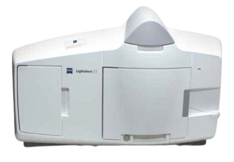

This lightsheet microscope is equipped with illumination optics on two
sides for homogeneous sample excitation, pivot scan for 3D imaging, 2
sensitive sCMOS cameras for simultaneous 2-channel imaging
and environmental control for live specimens (temperature). A camera and
an IR LED (to minimise phototoxicity) in the sample chamber facilitate
sample positioning.
Objectives:
Excitation (lightsheet formation):
Imaging:
Note that only a single objective lens can be installed in the
microscope at a time.
- EC Plan-Neofluar 5x/0.16, WD 5.1 mm, for water immersion
- W
Plan-Apochromat 20x/1.0 water immersion, WD 2.4 mm
- W
Plan-Apochromat 63x/1.0 water immersion, WD 2.1 mm
[WD = working distance]
Fluorescence
excitation lasers:
- 445 nm
- 488 nm
- 515 nm
- 561 nm
Fluorescence filter sets:
Note that the filter sets do not separate excitation from emission
paths; it splits fluorescence onto the two cameras for 2-channel
imaging. The filter sets consist of emission filter 1;
secondary beamsplitter; emission filter 2.
- CFP/YFP (BP 460-500; LP 510; BP 525-565)
- CFP/mCherry (BP 460-500; LP 560; LP 585)
- GFP/mCherry (BP 505-545; LP 560; LP 585)
- YFP/mCherry (BP 525-565; LP 580; LP 585)
[BP = band pass, LP = long pass]
Detectors and cameras:
- 2x PCO.edge (1920x1920 pixels, 6.5 µm/pixel)
Software:
Other features:
| Usage fees [SGD/hour] |
LKCMed |
NTU |
Others |
| 15* |
60 |
75 |
| Location |
EMB 04-02Y, Zebrafish facility |
| Contact |
nobic.facilities@e.ntu.edu.sg |
*Reduced rates apply:
- off-peak hours (weekends, public holidays and 18.00
- 8.30 on weekdays): 70% of the rate stated in the
table
- 30% of the prevailing rate applicable after
10 hours of booking/usage
- 30% of the prevailing rate (that is already the
discounted rate in this case) applicable after 24 hours
of booking/usage.
BACK TO TOP